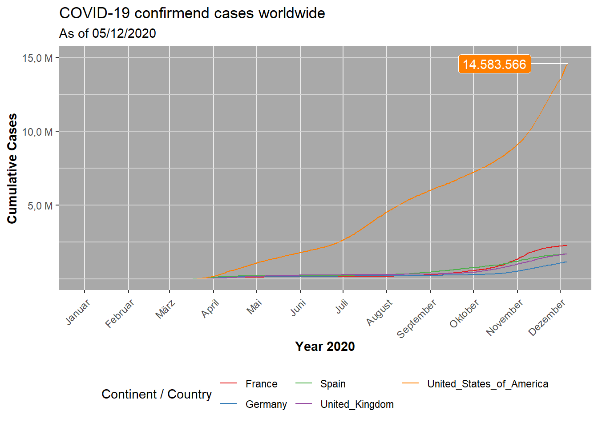

4th Assignmend – DATA VISUAIZATION
\(~\)
Line plot of COVID-19 cases (Challenge 1)
Result
Time course of the cumulative COVID-19 cases in France, Germany, Spain, UK and the US.
cases_worldwide <- readRDS("data/05-1_line-plot_cases-worldwide.rds")
cases_worldwide
\(~\)
Code
# 1 DATA ACQUISITION ------------------------------------------------------
# Load packages
library(readr)
url <- "https://opendata.ecdc.europa.eu/covid19/casedistribution/csv"
covid_data_dt <- read_csv(url)
# 2 DATA WRANGLING --------------------------------------------------------
# Load packages
library(tidyverse)
library(lubridate)
# --- --- --- for one Country --- --- ----
# # Select appropriate columns
# covid_cases <- covid_data_dt %>%
# select(c(1:5,"countriesAndTerritories")) %>%
# rename("country" = "countriesAndTerritories")
#
# # filter for countries
# covid_cases_countries <- covid_cases %>%
# filter(country %in% c("France")) #,"Germany","Spain","United_Kingdom","United_States_of_America")) %>%
#
# # Cumulate Cases
# covid_cumCases_countries <- covid_cases_countries %>%
#
# # add smart date column & order
# mutate(date = str_glue("{year}-{month}-{day}") %>% as.Date()) %>%
# arrange(date) %>%
#
# # Cumulate Cases
# mutate(cumCases = cumsum(cases))
# --- --- --- for all Countries --- --- ----
# Select appropriate columns
covid_cases <- covid_data_dt %>%
select(c(1:5,"countriesAndTerritories")) %>%
rename("country" = "countriesAndTerritories")
# filter for countries
covid_cases_countries <- covid_cases %>%
filter(country %in% c("France","Germany","Spain","United_Kingdom","United_States_of_America"))
# Cumulate Cases
covid_cumCases_countries <- covid_cases_countries %>%
# add smart date column & order
mutate(date = str_glue("{year}-{month}-{day}") %>% as.Date()) %>%
arrange(date) %>%
# Cumulate Cases
group_by(country) %>%
mutate(cumCases = cumsum(cases)) %>%
ungroup() %>%
# Label text
mutate(cumCases_text = scales::dollar(cumCases, big.mark = ".",
decimal.mark = ",",
prefix = "",
suffix = ""))
## Writing files
# write_rds(covid_cumCases_countries, "covid_cumCases_countries.rds")
# 3 DATA VISUALIZATION --------------------------------------------------------------
# Load packages
library(ggthemes)
library(ggrepel)
library(ggplot2)
# Scaling var
ylab <- c(5.0, 10.0, 15.0)
# Canvas
cases_worldwide <- covid_cumCases_countries %>%
ggplot(aes(date, cumCases, color = country)) +
# Geometries
geom_line(size = 0.5, linetype = 1) +
geom_hline(yintercept = seq(0, 15e6, 2500000), colour="light grey") + # horizontal net
geom_label_repel(aes(label = cumCases_text),
data = covid_cumCases_countries %>% filter(cumCases == max(cumCases)),
show.legend = F, # no label legend
color = "white",
hjust = 1.5,
point.padding = 1e-06, # position label + line
fill = RColorBrewer::brewer.pal(n = 5, name = "Set1")[5] # label background = line color
) +
# Formatting
scale_x_date(date_labels = "%B", date_breaks = "1 month") +
scale_y_continuous(labels = paste0(ylab, ",0 M"),breaks = 10^6 * ylab) +
scale_color_brewer(palette = "Set1") + # color categories
labs(
title = "COVID-19 confirmend cases worldwide",
subtitle = "As of 05/12/2020",
x = expression(bold("Year 2020")),
y = expression(bold("Cumulative Cases")),
color = "Continent / Country" # Legend text
) +
# Theme
theme_bw() +
theme(legend.position = "bottom",
legend.direction = "vertical",
axis.text.x = element_text(angle = 45, hjust = 1, vjust = 0.95),
panel.grid.minor = element_blank(),
panel.border = element_blank(),
panel.background = element_rect(fill = "dark grey")
) +
guides(color=guide_legend(nrow=2, title.position = "left")) # two row legend
# Writing files
write_rds(cases_worldwide, "line-plot_cases-worldwide.rds")\(~\)
Worlwide morality rate (Challenge 2)
Result
Visualization of the distribution of the mortality rate (deaths / population) over the world.

\(~\)
Code
# 1 DATA AQUISITION -------------------------------------------------------
library(readr)
url <- "https://opendata.ecdc.europa.eu/covid19/casedistribution/csv"
covid_data_dt <- read_csv(url)
library(maps)
world <- map_data("world")
# 2 DATA WRANGLING --------------------------------------------------------
# Load packages
library(tidyverse)
library(lubridate)
library(data.table)
# Input arguments
date_lvl <- "2020-12-05"
date_lvl <- as.Date(date)
# --- --- COVID DATA --- --- --- --- ---
# Select appropriate columns
covid_deaths <- covid_data_dt %>%
select(c(1:7,"countriesAndTerritories", "popData2019")) %>%
rename("country" = "countriesAndTerritories")
# Level of deaths & mortality
covid_mort_lvl <- covid_deaths %>%
# add smart date column & order
mutate(date = str_glue("{year}-{month}-{day}") %>% as.Date()) %>%
arrange(date) %>%
# equalize country designations
mutate(across(country, str_replace_all, "_", " ")) %>%
mutate(country = case_when(country == "United Kingdom" ~ "UK",
country == "United States of America" ~ "USA",
country == "Czechia" ~ "Czech Republic",
TRUE ~ country
)
) %>%
# Cumulate deaths
group_by(country) %>%
mutate(deaths_overall = cumsum(deaths)) %>%
ungroup() %>%
# filter for desired level
filter(date == date_lvl) %>%
# calculate mortality at level
mutate(mortality = deaths_overall / popData2019)
# Project mortality on world
setDT(world)
setDT(covid_mort_lvl)
covid_mort_worlwide <- merge(x = covid_mort_lvl,
y = world,
by.x = "country",
by.y = "region",
all.x = FALSE,
all.y = TRUE)
setDF(covid_mort_lvl)
# # Writing files
# write_rds(covid_cumCases_countries, "covid_cumCases_countries.rds")
# 3 DATA VISUALIZATION --------------------------------------------------------------
# Load packages
library(ggplot2)
library(scales)
# Canvas
morality_rate <- ggplot() +
# Geometries
geom_map(data = covid_mort_worlwide,
map = world,
aes(map_id = country, x = long, y = lat, fill= mortality),
colour = RColorBrewer::brewer.pal(n = 9, name = "Greys")[3],
size=0.25) +
# Formatting
scale_fill_gradient(low = RColorBrewer::brewer.pal(n = 9, name = "Reds")[7],
high = "black",
labels = percent) +
labs(title = "Confirmend COVID-19 deaths relative to the size of the population",
subtitle = "More than 1.5 Million confirmend COVID-19 deaths worldwide",
caption = str_glue("Date: {covid_mort_lvl[[1,1]]}"),
fill = "Mortality Rate"
) +
# Theme
theme_minimal() +
theme(axis.line=element_blank(),axis.text.x=element_blank(),
axis.text.y=element_blank(),axis.ticks=element_blank(),
axis.title.x=element_blank(),
axis.title.y=element_blank()
)
# Plot
morality_rate
# Writing files
write_rds(morality_rate, "map-plot_morality-rate.rds")\(~\) \(~\)
\(~\)